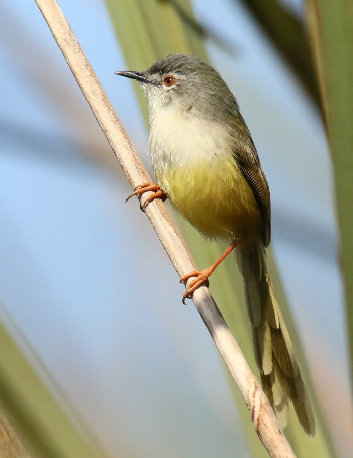

यलो-बेलिड प्रिनियाYellow-bellied Prinia
Prinia flaviventris · Cisticolidae · BRD-0270

- Scientific name वैज्ञानिक नाम
- Prinia flaviventris (Delessert, 1840)
- Family कुल
- Cisticolidae
- Hindi हिंदी
- यलो-बेलिड प्रिनिया
- Local names स्थानीय नाम
- yellow-bellied prinia, yellow bellied prinia, peeli prinia
- Status here यहाँ की स्थिति
- native
- Movement आवागमन
- Resident, here all year
- Known from कहाँ दर्ज
- Others have published records from the wider Awadh–Purvanchal plain, none yet from Basti–Ayodhya अवध–पूर्वांचल से दूसरों के प्रकाशित अभिलेख, बस्ती–अयोध्या से अभी नहीं
- IUCN IUCN
- not evaluated
- Review समीक्षा
- not yet reviewed
When to look कब देखें
Present all year. साल भर मौजूद।
Uses and possibilities उपयोग और संभावनाएँ
Drawn from the documented uses in the profile below, where each is labelled traditional, current or a research lead. All uses →
Tell it apart from इनसे अलग पहचानें
यलो-बेलिड प्रिनिया / Yellow-bellied Prinia
Prinia flaviventris (Delessert, 1840) — Cisticolidae
यलो-बेलिड प्रिनिया — यह दलदली घास के मैदानों, नरकुल और सरकंडे के घने झुरमुटों में रहने वाली एक छोटी और चंचल फुदकी है। इसका सिर स्लेटी-धूसर, पीठ जैतूनी भूरी, छाती सफेद और पेट चमकीला पीला होता है। इसकी पूंछ लंबी और सिरे पर सीढ़ीदार होती है जिसे यह अक्सर ऊपर-नीचे हिलाती रहती है। बरसात में नर ऊंची घास पर बैठकर टिक-टिक जैसी आवाज निकालते हुए हवा में लहराती उड़ान भरता है। यह घास के कीड़ों को खाती है।
Quick Identification त्वरित पहचान
| Feature | Description |
|---|---|
| Body size | Small, slender warbler with a long graduated tail (Grimmett et al. 2011) |
| Head & Cap | Distinct dark slaty-grey head contrasting with the olive-brown mantle |
| Underparts | Clean white throat and upper breast, contrasting with bright lemon-yellow belly and vent |
| Tail | Long, strongly graduated tail, tipped with narrow whitish margins underneath |
| Bill & Legs | Blackish slender bill in breeding season; pale flesh-pink legs and feet |
| Behavior | Perches atop tall grass stems to sing, flicking its graduated tail vigorously |
Field tip: Scan the tops of flowering Kans grass (Saccharum spontaneum) along wet floodplain margins during early morning hours.
हिंदी: इसका सिर गहरा स्लेटी और पेट चमकीला पीला होता है। यह दलदली घासों की ऊपरी नोक पर बैठकर अपनी लंबी पूंछ को हिलाते हुए गाती नजर आती है।
Morphology आकारिकी
The adult has an unstreaked slaty-grey crown, ear-coverts, and nape, creating a hooded appearance that contrasts sharply with the rich olive-brown back, rump, and wings. The lores are dark, and there is a faint pale eye-ring around the reddish-brown iris. The chin, throat, and upper breast are pure white, forming a clean throat patch that transitions abruptly into the vibrant sulphur-yellow of the lower breast, belly, flanks, and undertail-coverts. The tail is long, narrow, and strongly graduated, composed of twelve feathers. The bill is slender, slightly decurved, and black in breeding males (Rasmussen & Anderton 2012).
Vocalisations. The territorial song is an energetic, rhythmic sequence of sharp snapping notes followed by a musical warble, transcribed as a brisk tlick-tlick-tlick-tzzz or metallic chup-chup-zeee. In flight displays, the wings produce an audible snapping or purring sound as the male rises above the grass canopy before descending back into dense cover.
हिंदी: सिर स्लेटी और पीठ भूरी होती है। गला सफेद और पेट पीला होता है। इसकी आवाज तेज टिक-टिक जैसी और पंखों से फड़फड़ाहट की ध्वनि वाली होती है।
Behaviour & Ecology व्यवहार और पारिस्थितिकी
This prinia is an obligate wetland specialist, strongly restricted to tall riparian grasslands, reed beds (Phragmites karka), cat-tails (Typha), and dense semi-aquatic vegetation fringing oxbow lakes and perennial river channels. It is highly active, clambering adroitly up vertical grass culms and reeds, gleaning insect prey from leaf sheaths. During the breeding season, males establish linear territories along ditch borders, mounting conspicuous singing displays from the tips of emergent stems. When alarmed, it drops vertically into the impenetrable undergrowth and scuttles through the grass bases with rodent-like agility.
हिंदी: यह मेंढकों और जलपक्षियों के साथ दलदली घासों में रहती है। यह सरकंडे के तनों पर तेजी से चढ़ती है और पत्तियों के बीच छिपे कीड़ों को पकड़ती है।
Life Cycle / Phenology जीवन चक्र
Breeding occurs primarily during the southwest monsoon season from June to September when tall floodplain grasses attain maximum vegetative growth. The male constructs a neat, deep purse-shaped or domed nest woven from fine grass strips, lined with silk from spiderwebs and flowering grass down, stitched securely among upright reed stalks. The female lays a clutch of 3 to 5 glossy, terracotta-red or rich mahogany-brown eggs (Ali & Ripley 1983). Both parents share incubation duties for approximately 12 days, and fledglings leave the nest about two weeks after hatching.
हिंदी: बरसात के दिनों में जब घास घनी हो जाती है तब यह प्रजनन करती है। नर और मादा पत्तियों को सिलकर थैली जैसा सुंदर घोंसला बनाते हैं जिसमें 3 से 5 भूरे-लाल अंडे दिए जाते हैं।
Host Plants or Prey आहार
The diet is almost exclusively insectivorous. It forages actively through dense foliage, gleaning small grasshoppers, leafhoppers, aphids, beetles, caterpillars, and small spiders from the stems and leaf sheaths of floodplain grasses (Saccharum, Phragmites, Typha). It also captures small flying dipteran flies and midges by executing brief aerial sorties into open air above the grass canopy.
हिंदी: इसका मुख्य भोजन घासों पर मिलने वाले छोटे कीड़े, टिड्डियां, माहू, इल्लियां और छोटी मकड़ियां हैं। यह पत्तियों की दरारों से कीड़ों को चुनकर खाती है।
Predators / Natural Enemies शत्रु
Common wetland predators on the Gangetic plain include small raptors such as the Shikra (Accipiter badius) and Black Kite (Milvus migrans), which surprise perched prinias from adjacent woodland fringes. Arboreal colubrid snakes like the Northern Bronzeback (Dendrelaphis tristis) and predatory corvids like the House Crow (Corvus splendens) systematically search grass beds for active nests and nestlings.
हिंदी: शिकरा और चील झाड़ियों पर बैठी फुदकियों पर झपट्टा मारते हैं। पेड़ के सांप और कौवे इनके घोंसलों से अंडे और बच्चों को खा जाते हैं।
Agricultural / Human Relevance कृषि प्रासंगिकता
In the floodplain agrarian landscapes of Awadh, this prinia serves as a valuable biological control agent along wetland-adjacent sugarcane and rice fields. By consuming substantial numbers of phytophagous plant hoppers and stem borer moths that spill over from riverine grasslands into agricultural crops, it contributes to natural pest suppression. It poses zero threat to grain crops. It is protected under the Wildlife (Protection) Act 1972.
हिंदी: यह गन्ने और धान के खेतों के पास रहकर हानिकारक कीटों को खाती है और फसलों की रक्षा करती है। यह किसानों की मित्र पक्षी है और कानूनी रूप से संरक्षित है।
Expected Locally स्थानीय रूप से अपेक्षित
Not a field record. Written from published accounts for eastern Uttar Pradesh. No confirmed local sighting yet — if you have seen it, that is what the atlas needs.
अभी तक स्थानीय पुष्टि नहीं। यह विवरण प्रकाशित स्रोतों से है, किसी अवलोकन से नहीं।
In Basti and Ayodhya districts, optimal search localities include the extensive wet grasslands of Bakhira Bird Sanctuary, tall Kans grass belts along the Ghaghara and Kuwana riverbanks, and marshy oxbow ditches with dense cat-tail overgrowth. Morning surveys between sunrise and mid-morning during the monsoon months offer the highest probability of hearing territorial song displays. GBIF holds published records from the wider Awadh–Purvanchal plain, none yet from Basti–Ayodhya. A first confirmed record requires a clear photograph displaying the slaty head hood and bright yellow belly submitted through the atlas platform.
Distribution वितरण
Global range: Widespread across the northern Indian subcontinent and Southeast Asia, from Pakistan through northern India, Nepal, Bangladesh, Myanmar, Thailand, and southern China.
In India: Distributed across the northern alluvial plains and river corridors of Punjab, Haryana, Uttar Pradesh, Bihar, West Bengal, and Assam.
In Uttar Pradesh: Recorded from wetland sanctuaries and riverine grassland complexes across central and eastern districts.
In Basti district / eastern UP: Expected along the Ghaghara, Sarayu, and Kuwana floodplains and permanent wetland margins.
हिंदी: यह उत्तरी भारत, पाकिस्तान, नेपाल और दक्षिण-पूर्व एशिया के नदी कछारों में पाई जाती है। उत्तर प्रदेश के दलदली घास के मैदानों में इसका वास दर्ज है।
Research Questions शोध प्रश्न
- How do seasonal flood surges in the Ghaghara River influence nest placement heights in Kans grass tussocks? / घाघरा की बाढ़ से बचने के लिए यह चिड़िया कांस की घासों में कितनी ऊंचाई पर घोंसला बनाती है?
- What are the key micro-botanical preferences that distinguish nesting territories of this species from the sympatric Plain Prinia? / यह फुदकी प्लेन प्रिनिया से अलग किस तरह की घासों में घोंसला बनाना पसंद करती है?
- What is the impact of seasonal grassland burning on juvenile recruitment along eastern Uttar Pradesh river corridors?
- How does the replacement of native reed beds by invasive water hyacinth impact foraging efficiency?
- Can local wetland bird clubs help document vocal activity flushes during the early monsoon arrival? / क्या स्थानीय पक्षी प्रेमी मानसून की शुरुआत में इसकी आवाज को रिकॉर्ड करके इसके फैलाव को दर्ज कर सकते हैं?
Similar Species मिलती-जुलती प्रजातियाँ
| Species | How to tell apart | हिंदी | |
|---|---|---|---|
| Plain Prinia \ | Prinia inornata | Uniform sandy-brown above with a pale supercilium, lacking the dark slaty-grey head and bright yellow belly (Grimmett et al. 2011) | प्लेन प्रिनिया का रंग एकसमान मटमैला भूरा होता है, इसका सिर स्लेटी नहीं होता और पेट पीला नहीं होता |
| Ashy Prinia \ | Prinia socialis | Dark ashy-grey upperparts, rich rufous-buff flanks, and bright brick-red eyes; inhabits gardens and scrub rather than wet reed beds | ऐशी प्रिनिया की पीठ राख जैसी स्लेटी होती है, बगल भूरी-लाल होती है और आंखें लाल होती हैं |
| Grey-breasted Prinia \ | Prinia hodgsonii | Smaller with a distinct broad grey breast band in breeding plumage and dark subterminal tail spots | ग्रे-ब्रेस्टेड प्रिनिया छोटी होती है और इसकी छाती पर चौड़ी स्लेटी पट्टी होती है |
Field rule: Small marshland prinia with dark slaty-grey head, white throat, bright yellow belly, and long graduated tail in tall riverine grass.
हिंदी: स्लेटी सिर, सफेद गले और चमकीले पीले पेट वाली दलदली फुदकी जो ऊंची घासों पर बैठकर गाती है।
Taxonomy & Classification वर्गीकरण
Original description. Delessert (1840), Oiseaux nouveaux de l'Inde, Revue Zoologique par la Société Cuvierienne, 3, p. 101; type locality: Bengal, India.
Subspecies. Nominal form Prinia flaviventris flaviventris occurs across the northern Gangetic plains and Terai.
Family and order placement. Placed in the genus Prinia Horsfield, 1821, family Cisticolidae, order Passeriformes.
Phylogenetic notes. Forms a specialized clade of wetland-adapted Prinia species characterized by striking ventral carotenoid pigmentation and distinct vocal flight displays.
IUCN status rationale. Not evaluated by the IUCN Red List; abundant and widely distributed across riverine grass systems of South Asia.
हिंदी: एडोल्फ डेलैसर्ट ने 1840 में बंगाल से इसका पहला वैज्ञानिक विवरण लिखा था। यह सिस्टिकोलिडे कुल का सदस्य है।
Photo Gallery फोटो गैलरी
No photos yet — add field photos to media/species/yellow_bellied_prinia/ and run node scripts/sync_photos.js.
Photos needed आवश्यक फोटो
- [ ] Habitat view showing typical local microhabitat (प्राकृतिक वास का विस्तृत परिदृश्य)
- [ ] Male singing from top of tall flowering grass stem (घास की नोक पर बैठकर गाता नर)
- [ ] Profile showing slaty-grey hood, white throat, and yellow belly (स्लेटी सिर, सफेद गले और पीले पेट का स्पष्ट दृश्य)
- [ ] Woven nest stitched among upright reed stalks (नरकुल के तनों के बीच सिला हुआ घोंसला)
References संदर्भ
- Original description: Delessert, 1840 — see GBIF.
- Grimmett, R., Inskipp, C. & Inskipp, T. (2011). Birds of the Indian Subcontinent. Christopher Helm, London.
- Rasmussen, P. C. & Anderton, J. C. (2012). Birds of South Asia: The Ripley Guide. Vols. 1 and 2. Lynx Edicions, Barcelona.
- Ali, S. & Ripley, S. D. (1983). Handbook of the Birds of India and Pakistan. Compact ed. Oxford University Press, New Delhi.
- GBIF Occurrence Data — Prinia flaviventris, India (2025).
Source file: species/fauna/birds/yellow_bellied_prinia.md